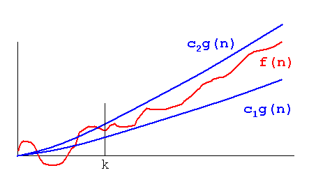

(definition)
Definition: A theoretical measure of the execution of an algorithm, usually the time or memory needed, given the problem size n, which is usually the number of items. Informally, saying some equation f(n) = Θ (g(n)) means it is within a constant multiple of g(n). The equation is read, "f of n is theta g of n".
Formal Definition: f(n) = Θ (g(n)) means there are positive constants c1, c2, and k, such that 0 ≤ c1g(n) ≤ f(n) ≤ c2g(n) for all n ≥ k. The values of c1, c2, and k must be fixed for the function f and must not depend on n.

Also known as theta.
Generalization (I am a kind of ...)
big-O notation.
See also
 , asymptotically tight bound.
, asymptotically tight bound.
Note: This is the upper-case Greek letter Theta.
Author: PEB
Donald E. Knuth, Big Omicron and Big Omega and Big Theta, SIGACT News, 8(2):18-24, April-June 1976.
If you have suggestions, corrections, or comments, please get in touch with Paul E. Black.
Entry modified 17 December 2004.
HTML page formatted Mon Sep 11 09:46:00 2006.
Cite this as:
Paul E. Black, "Θ", in
Dictionary of Algorithms and Data
Structures [online], Paul E. Black, ed.,
U.S. National Institute of
Standards and Technology. 17 December 2004. (accessed TODAY)
Available from: http://www.nist.gov/dads/HTML/theta.html